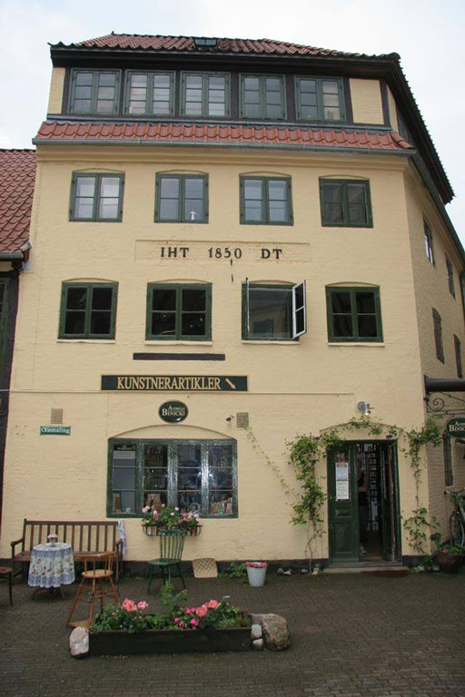

A. Binicki Kunstnerartikler, Kvaliteten der holder
Home
Blogpost
Omos

Hos os kan du få det bedste produkter malerverdenen tilbyder. Vi går op i kvalitet, så du roligt kan gå igang med dine kreativer tanker.
Hvis du lige er begyndt.
Hvis du lige er begyndt på at skulle til at male, kan vi anbefale disse produkter, fordi de er nemme at håndtere og blande sammen, så du kan få den kombination du vil have.
Hvis du har en tvivl om hvordan du skal gøre, kan du altid komme i kontkat med os og få mere information
Hvis du er erfaren.
Hvis du mere erfaren med dine kunskaber kan disse produkter hjælpe dig. Vi tilbyder nogle varer af højere standarder og kan bruges til de værker, som du kan være stolt af.
Hvis du vil, skal du også være velkommen til at komme og være en del af vores lille butik og udvikle den.
Hvis du er mere til noget mere ekstravagant.
Hvis du gerne vil have nogle materialer udover det sædvanlige har vi også vegansk maling, så du kan tænke på miljøet i takt med din kreative værker.
Hvis du er nysgerrig overfor hvad det indeholder skal du være velkommen til at konakte os.
Ring til os for mere information
tester
Hvis du går ind på vores "Kontakt os" siden kan du få alt af vide omkring hvordan du kommer i kontakt med os.